<meta charset="utf-8">
<title>Versal Small Details</title>
<meta name="claude:viewport-fit-sides" content="cover">
<link rel="preconnect" href="https://fonts.googleapis.com">
<link rel="stylesheet" href="https://fonts.googleapis.com/css2?family=Texturina:opsz,wght@12..72,500;12..72,600;12..72,700&family=Crimson+Pro:ital,wght@0,400;0,600;1,400&display=swap">
<style>
  /* Layout: one column of decisions, each a row of options side by side
     (wrapping on a phone); the game's own black, paper and letters. */
  :root {
    --ground: #0d0c0b;
    --plate: #000;
    --paper: #f4eee2;
    --text: #ddd6c6;
    --dim: #8f877a;
    --faint: #5d574f;
    --line: #3a3632;
    --blood: #a3261b;
    --amber: #d9a53a;
    --letter: Texturina, Georgia, serif;
    --log: "Crimson Pro", Georgia, serif;
    color-scheme: dark;
  }
  * { box-sizing: border-box; }
  body { background: var(--ground); color: var(--text); font: 18px/1.45 var(--log); }
  main { max-width: 1180px; margin: 0 auto; padding-block: 40px 80px; padding-left: max(16px, env(safe-area-inset-left, 0px)); padding-right: max(16px, env(safe-area-inset-right, 0px)); display: grid; gap: 64px; }
  header { display: grid; gap: 10px; max-width: 70ch; }
  h1 { font: 600 clamp(32px, 5vw, 48px)/1.05 var(--letter); margin: 0; color: var(--paper); text-wrap: balance; }
  header p { margin: 0; color: var(--dim); }
  section { display: grid; gap: 18px; }
  .ask { display: grid; gap: 4px; max-width: 72ch; }
  h2 { font: 600 28px/1.15 var(--letter); margin: 0; color: var(--paper); text-wrap: balance; }
  .ask q { color: var(--dim); font-style: italic; quotes: "“" "”"; }
  .ask p { margin: 0; }
  .opts { display: grid; grid-template-columns: repeat(auto-fit, minmax(200px, 1fr)); gap: 18px; }
  .opts.wide { grid-template-columns: repeat(auto-fit, minmax(340px, 1fr)); }
  figure { margin: 0; display: grid; gap: 8px; align-content: start; min-width: 0; }
  figure img { display: block; width: 100%; height: auto; border-radius: 3px; image-rendering: auto; }
  figcaption { display: flex; flex-wrap: wrap; gap: 2px 10px; align-items: baseline; font-size: 16px; color: var(--dim); }
  figcaption b { font: 700 18px var(--letter); color: var(--text); }
  figcaption .tag { flex-basis: 100%; }
  figure.pick figcaption b::after { content: "recommended"; margin-left: 8px; font: 600 11px var(--letter); letter-spacing: 0.08em; text-transform: uppercase; color: var(--plate); background: var(--amber); padding: 1px 7px; border-radius: 99px; vertical-align: 2px; }
  .rec { margin: 0; padding: 12px 16px; border-left: 3px solid var(--amber); background: #17140f; max-width: 80ch; }
  .rec b { color: var(--amber); font-weight: 600; }

  /* The name pages: drawn at a fixed 16:10, sized by their frame. */
  .frame { container-type: inline-size; aspect-ratio: 16 / 10; position: relative; overflow: hidden; border-radius: 3px; background: var(--plate); max-width: 100%; }
  .frame > * { position: absolute; }
  .np-map { inset: 0; width: 100%; height: 100%; object-fit: cover; }
  /* A: a torn plate over the dimmed map. */
  .a .np-map { filter: brightness(0.32) sepia(0.2); }
  .a .plate { left: 50%; top: 50%; transform: translate(-50%, -50%); width: 52cqw; padding: 5cqw 5.5cqw 4.5cqw; background: var(--plate); display: grid; gap: 1.6cqw;
    clip-path: polygon(0 3%, 6% 0, 14% 2%, 23% 0, 31% 1.5%, 42% 0, 50% 2%, 61% 0.5%, 70% 2.5%, 81% 0, 90% 2%, 100% 0.5%, 98.5% 14%, 100% 27%, 98% 41%, 100% 55%, 98.5% 70%, 100% 84%, 99% 100%, 88% 98%, 77% 100%, 66% 97.5%, 55% 100%, 44% 98%, 33% 100%, 22% 97.5%, 11% 100%, 0 98%, 1.5% 84%, 0 70%, 1.5% 55%, 0 40%, 1.5% 26%, 0 13%); }
  .a h3 { margin: 0; font: 600 4.6cqw/1.05 var(--letter); color: var(--text); }
  .a .line { display: grid; grid-template-columns: auto 1fr; gap: 1cqw; align-items: baseline; font: 600 2.5cqw var(--letter); color: var(--dim); }
  .a .line span:last-child { border-bottom: 0.2cqw dotted var(--line); font: 600 3.4cqw var(--letter); color: var(--text); padding-bottom: 0.3cqw; }
  .a .line i { display: inline-block; width: 0.25cqw; height: 3cqw; background: var(--text); vertical-align: -0.4cqw; margin-left: 0.3cqw; }
  .a small { font: 2.2cqw var(--log); color: var(--dim); }
  .a .go { font: 600 2.3cqw var(--letter); color: var(--faint); }
  .a .go b { color: var(--text); }
  /* B: a title page on paper, the map as its frontispiece. */
  .b { background: var(--paper); }
  .b .np-map { inset: 0; filter: contrast(1.05); -webkit-mask-image: radial-gradient(ellipse 70% 60% at 50% 40%, #000 30%, transparent 75%); mask-image: radial-gradient(ellipse 70% 60% at 50% 40%, #000 30%, transparent 75%); opacity: 0.55; }
  .b .title { left: 0; right: 0; top: 13cqw; text-align: center; display: grid; gap: 0.6cqw; }
  .b .title h3 { margin: 0; font: 700 10cqw/0.9 var(--letter); letter-spacing: 0.04em; color: #1b1815; text-shadow: 0 0 1.5cqw var(--paper), 0 0 3cqw var(--paper); }
  .b .title p { margin: 0; font: italic 2.6cqw var(--log); color: #4a4036; text-shadow: 0 0 1cqw var(--paper); }
  .b .sign { left: 50%; transform: translateX(-50%); bottom: 6cqw; width: 46cqw; background: var(--paper); padding: 2cqw 3cqw; display: grid; gap: 1cqw; box-shadow: 0 0 3cqw 2cqw var(--paper); }
  .b .sign span { font: 600 2.4cqw var(--letter); color: #6b5f52; letter-spacing: 0.06em; text-transform: uppercase; }
  .b .sign strong { font: italic 4cqw var(--log); color: #1b1815; border-bottom: 0.25cqw solid #1b1815; padding-bottom: 0.2cqw; }
  .b .sign small { font: 600 2.2cqw var(--letter); color: #6b5f52; }
  .b .sign small b { color: var(--blood); }
  /* C: the game itself, the question asked in the corner. */
  .c .np-map { filter: brightness(0.9); }
  .c .corner { left: 0; top: 0; width: 46cqw; height: 22cqw; background: var(--plate); padding: 2.2cqw 2.6cqw; display: grid; gap: 0.7cqw; align-content: start;
    clip-path: polygon(0 0, 100% 0, 98% 30%, 100% 52%, 92% 70%, 80% 84%, 62% 92%, 44% 100%, 24% 96%, 0 100%); }
  .c .corner h3 { margin: 0; font: 600 3cqw/1 var(--letter); color: var(--text); }
  .c .corner h3 span { font-size: 1.8cqw; color: var(--dim); margin-left: 1cqw; }
  .c .corner p { margin: 0; font: 2.2cqw var(--log); color: var(--text); }
  .c .corner p b { font: 600 2.4cqw var(--letter); border-bottom: 0.2cqw dotted var(--dim); padding: 0 3cqw 0 0.4cqw; }
  .c .corner small { font: 600 1.6cqw var(--letter); color: var(--faint); }
  .c .side { right: 0; top: 0; bottom: 0; width: 26.5cqw; background: var(--plate); }

  /* The dividers: a piece of the sidebar each. */
  .sheet { background: var(--plate); padding: 22px 26px 26px; display: grid; gap: 12px; border-radius: 3px; font: 15px var(--log); color: var(--text); }
  .sheet h5 { margin: 0; font: 600 13px var(--letter); letter-spacing: 0.12em; text-transform: uppercase; color: var(--dim); display: flex; justify-content: space-between; }
  .sheet h5 small { font: 600 12px var(--letter); letter-spacing: 0.04em; text-transform: none; color: var(--faint); }
  .sheet .hp { font: 600 30px var(--letter); line-height: 1; }
  .sheet .hp span { font-size: 19px; color: var(--dim); }
  .sheet .ail { color: var(--dim); }
  .sheet .xp { font: 600 20px var(--letter); }
  .sheet .xp span { font-size: 16px; color: var(--dim); }
  .sheet .xpline { height: 2px; background: var(--line); margin-top: -4px; }
  .sheet .xpline i { display: block; height: 100%; width: 35%; background: var(--dim); }
  .div { height: 14px; display: grid; align-items: center; }
  .div svg { width: 100%; height: 14px; display: block; overflow: visible; }
  .div.now { height: 1px; background: var(--line); margin-block: 6px; }
  .div.double { height: 6px; border-top: 2px solid var(--line); border-bottom: 1px solid var(--line); margin-block: 4px; }

  @media (max-width: 520px) { body { font-size: 17px; } h2 { font-size: 24px; } }
</style>

<main>
  <header>
    <h1>Small details: the options</h1>
    <p>Your answers from the presentation, each with options to choose from. The pictures of the map are from the game itself, with only the thing in question changed. The one I'd pick is marked.</p>
  </header>

  <section id="name">
    <div class="ask">
      <h2>1. The name page</h2>
      <p><q>Let's look into this more. It doesn't look good yet.</q>&nbsp; Today it's a plain bordered card on black. All three below keep the same question and the same single field.</p>
    </div>
    <div class="opts wide">
      <figure>
        <div class="frame a" role="img" aria-label="A torn black plate over the dimmed map, asking who goes down">
          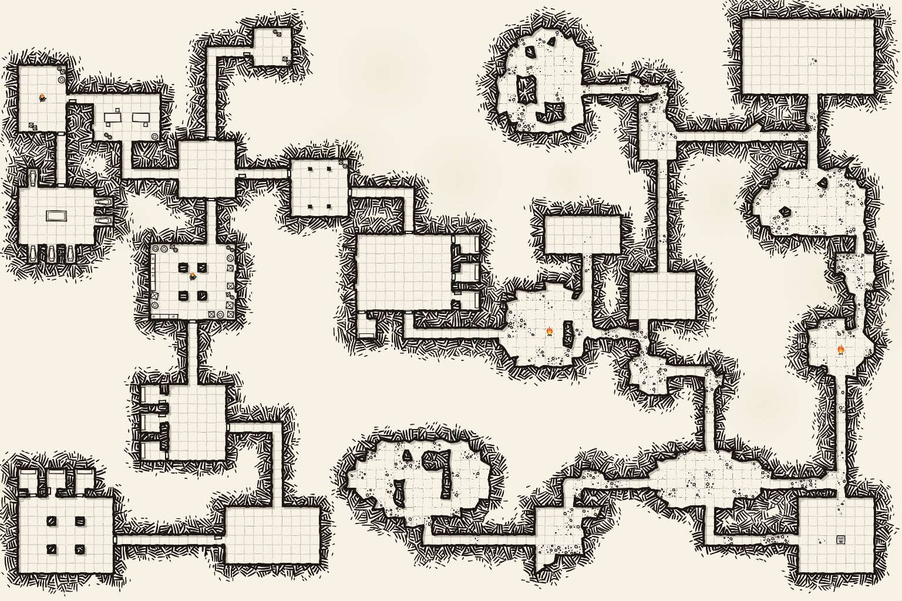
          <div class="plate">
            <h3>Who goes down?</h3>
            <div class="line"><span>Name</span><span>Edda<i></i></span></div>
            <small>An adventurer, into the old crypts.</small>
            <div class="go"><b>Enter</b> to go down</div>
          </div>
        </div>
        <figcaption><b>A</b><span>Torn plate</span><span class="tag">A black plate with torn edges, like the corner and sidebar, over the level's map, dimmed.</span></figcaption>
      </figure>
      <figure class="pick">
        <div class="frame b" role="img" aria-label="A title page on paper with Versal in large letters over the inked map, the name signed on a line">
          
          <div class="title"><h3>VERSAL</h3><p>into the old crypts, and below</p></div>
          <div class="sign"><span>Who goes down?</span><strong>Edda</strong><small><b>Enter</b> to go down</small></div>
        </div>
        <figcaption><b>B</b><span>Title page</span><span class="tag">On paper, like the map: the game's name over an inked map, your name signed on a line.</span></figcaption>
      </figure>
      <figure>
        <div class="frame c" role="img" aria-label="The game's first view, the question asked in the corner plate">
          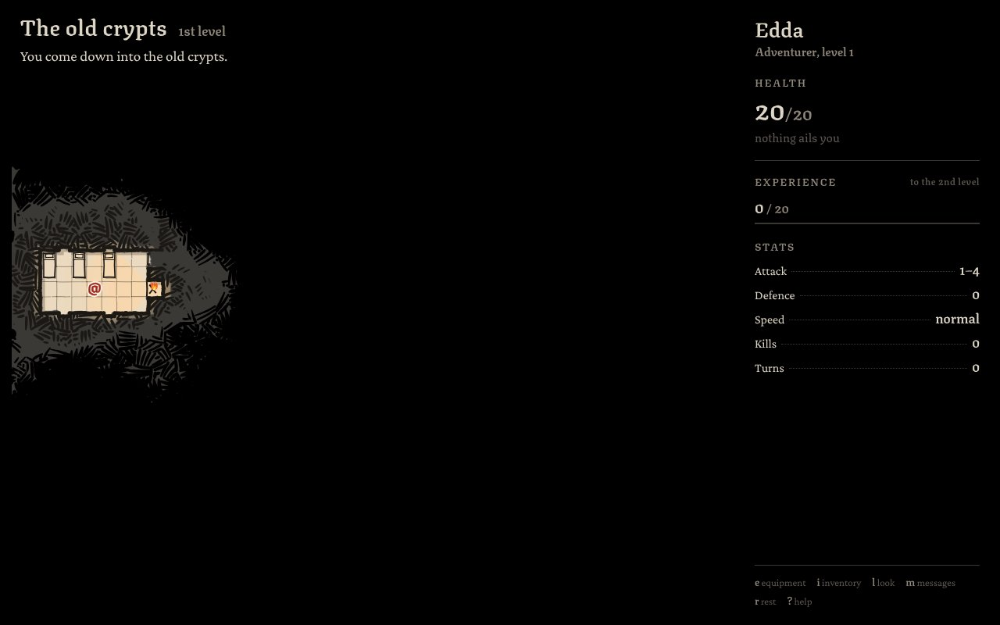
          <div class="side"></div>
          <div class="corner"><h3>The old crypts<span>1st level</span></h3><p>Who goes down? <b>Edda</b></p><small>Enter to go down</small></div>
        </div>
        <figcaption><b>C</b><span>In the corner</span><span class="tag">No page at all: the game is already there, and the corner asks the name as its first message.</span></figcaption>
      </figure>
    </div>
    <p class="rec"><b>I'd pick B.</b> It gives the game a first page of its own in the look the map already has, ink on paper. The black of the game then comes as you go down. A is the quieter choice; C is the quickest, but it gives the game no beginning.</p>
  </section>

  <section id="divider">
    <div class="ask">
      <h2>2. The divider under health</h2>
      <p><q>The thin experience line and the divider between health and experience are too similar.</q>&nbsp; The experience line stays as it is; only the divider changes.</p>
    </div>
    <div class="opts">
      <figure>
        <div class="sheet"><h5>Health</h5><div class="hp">20<span>/20</span></div><div class="ail">nothing ails you</div>
          <div class="div now"></div><h5>Experience <small>to the 2nd level</small></h5><div class="xp">7 <span>/ 20</span></div><div class="xpline"><i></i></div></div>
        <figcaption><b>Now</b><span>A thin straight line</span></figcaption>
      </figure>
      <figure class="pick">
        <div class="sheet"><h5>Health</h5><div class="hp">20<span>/20</span></div><div class="ail">nothing ails you</div>
          <div class="div"><svg viewBox="0 0 300 14" preserveAspectRatio="none" aria-hidden="true"><path d="M0 7 Q75 5.2 150 4.8 Q225 5.2 300 7 Q225 8.6 150 9.2 Q75 8.6 0 7 Z" fill="#5d574f"/></svg></div>
          <h5>Experience <small>to the 2nd level</small></h5><div class="xp">7 <span>/ 20</span></div><div class="xpline"><i></i></div></div>
        <figcaption><b>A</b><span>A pen stroke</span><span class="tag">Swelling in the middle and thin at both ends, as a nib draws.</span></figcaption>
      </figure>
      <figure>
        <div class="sheet"><h5>Health</h5><div class="hp">20<span>/20</span></div><div class="ail">nothing ails you</div>
          <div class="div"><svg viewBox="0 0 300 14" preserveAspectRatio="xMidYMid meet" aria-hidden="true"><defs><linearGradient id="fadeL" x1="0" x2="1"><stop offset="0" stop-color="#3a3632" stop-opacity="0"/><stop offset="1" stop-color="#5d574f"/></linearGradient><linearGradient id="fadeR" x1="1" x2="0"><stop offset="0" stop-color="#3a3632" stop-opacity="0"/><stop offset="1" stop-color="#5d574f"/></linearGradient></defs><rect x="20" y="6.5" width="118" height="1" fill="url(#fadeL)"/><rect x="162" y="6.5" width="118" height="1" fill="url(#fadeR)"/><path d="M150 2 L155 7 L150 12 L145 7 Z" fill="#8f877a"/></svg></div>
          <h5>Experience <small>to the 2nd level</small></h5><div class="xp">7 <span>/ 20</span></div><div class="xpline"><i></i></div></div>
        <figcaption><b>B</b><span>A diamond</span><span class="tag">A small lozenge in the middle, the line fading out to each side.</span></figcaption>
      </figure>
      <figure>
        <div class="sheet"><h5>Health</h5><div class="hp">20<span>/20</span></div><div class="ail">nothing ails you</div>
          <div class="div"><svg viewBox="0 0 300 14" preserveAspectRatio="none" aria-hidden="true"><polyline fill="none" stroke="#5d574f" stroke-width="1.6" stroke-linejoin="round" points="0,7 14,5 22,8 37,6 49,9 61,5.5 74,7.5 88,5 97,8.5 112,6 126,8 139,5 151,7.5 166,5.5 177,8.5 191,6 204,8 216,5 229,7.5 243,5.5 255,8.5 268,6 281,8 292,5.5 300,7"/></svg></div>
          <h5>Experience <small>to the 2nd level</small></h5><div class="xp">7 <span>/ 20</span></div><div class="xpline"><i></i></div></div>
        <figcaption><b>C</b><span>A torn line</span><span class="tag">Ragged, like the plates' torn edges.</span></figcaption>
      </figure>
      <figure>
        <div class="sheet"><h5>Health</h5><div class="hp">20<span>/20</span></div><div class="ail">nothing ails you</div>
          <div class="div double"></div><h5>Experience <small>to the 2nd level</small></h5><div class="xp">7 <span>/ 20</span></div><div class="xpline"><i></i></div></div>
        <figcaption><b>D</b><span>A double rule</span><span class="tag">Thick over thin, as a ledger rules off a sum.</span></figcaption>
      </figure>
    </div>
    <p class="rec"><b>I'd pick A.</b> Its shape is nothing like the flat experience bar, so the two can't be taken for each other, and it's drawn the way the map is drawn. B is close behind but more ornamental; C fights the torn plate's own edge right beside it.</p>
  </section>

  <section id="items">
    <div class="ask">
      <h2>3. Things on the floor</h2>
      <p><q>Let's make the items fit neatly inside a square. A tad smaller.</q>&nbsp; A dagger, chainmail, a potion, a sword and a helmet; each letter centred in its square.</p>
    </div>
    <div class="opts">
      <figure><figcaption><b>Now</b><span>0.78 of a square: the brackets cross the lines</span></figcaption></figure>
      <figure class="pick">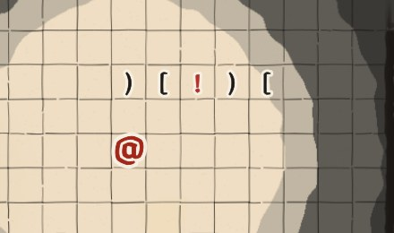<figcaption><b>A</b><span>0.66 of a square</span></figcaption></figure>
      <figure>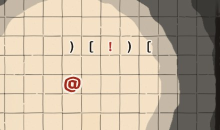<figcaption><b>B</b><span>0.60 of a square</span></figcaption></figure>
      <figure>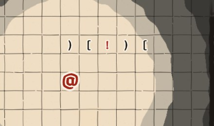<figcaption><b>C</b><span>0.54 of a square</span></figcaption></figure>
    </div>
    <p class="rec"><b>I'd pick A.</b> The tallest signs, ( and [, just clear the square's lines, and they're still easy to read at the game's zoom. B and C start to look like specks next to the letters of monsters.</p>
  </section>

  <section id="small">
    <div class="ask">
      <h2>4. Rats, bats and spiders</h2>
      <p><q>Make rat, bat &amp; spider's letters smaller. They're small animals.</q>&nbsp; From the left: a goblin, a rat, a bat, a spider, and a giant spider (which stays as it is).</p>
    </div>
    <div class="opts">
      <figure>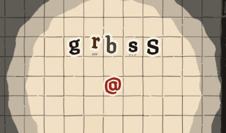<figcaption><b>Now</b><span>As big as a goblin (1.05)</span></figcaption></figure>
      <figure>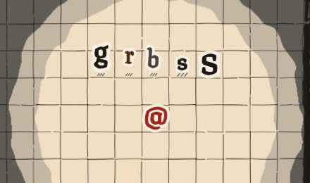<figcaption><b>A</b><span>0.85 of a square</span></figcaption></figure>
      <figure class="pick">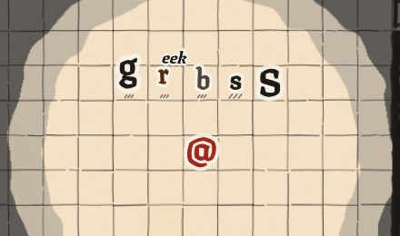<figcaption><b>B</b><span>0.75 of a square</span></figcaption></figure>
      <figure>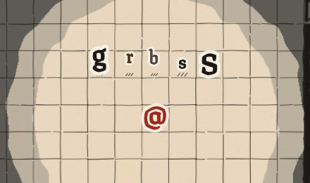<figcaption><b>C</b><span>0.65 of a square</span></figcaption></figure>
    </div>
    <p class="rec"><b>I'd pick B.</b> Clearly smaller than a goblin at a glance, still bigger than a thing on the floor (0.66), so a rat is never taken for an item.</p>
  </section>

  <section id="lantern">
    <div class="ask">
      <h2>5. The cultist's lantern</h2>
      <p><q>NO! Remove the flame, show the light.</q>&nbsp; No flame: the lantern lights the floor round the cultist, in the same bands as every other light, moving with them. Here the player's lamp is out, in a dark room. The question is only how far it reaches.</p>
    </div>
    <div class="opts">
      <figure>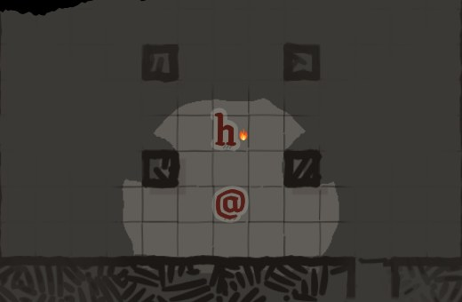<figcaption><b>Now</b><span>A flame held beside the letter</span></figcaption></figure>
      <figure>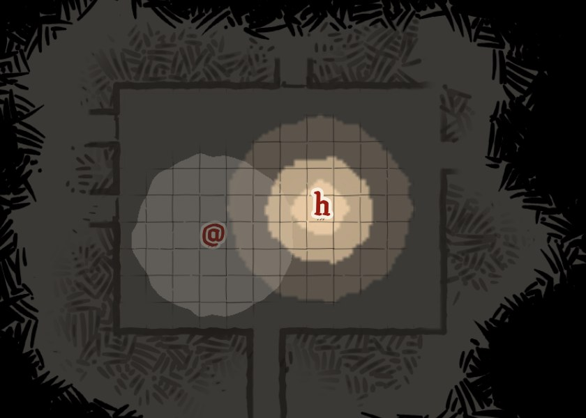<figcaption><b>A</b><span>A small pool: lit 1 square round, dim 1 more</span></figcaption></figure>
      <figure class="pick">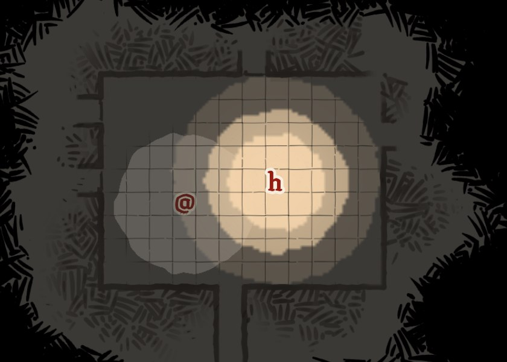<figcaption><b>B</b><span>Its reach in the game: lit 2, dim 1 more</span></figcaption></figure>
      <figure>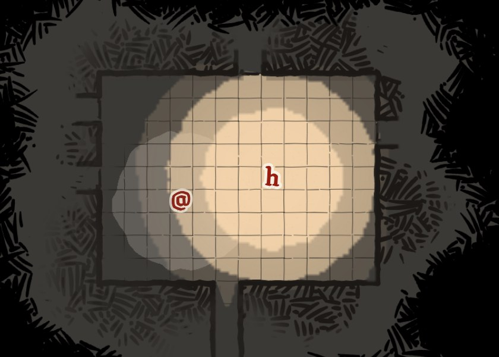<figcaption><b>C</b><span>A wide pool: lit 3, dim 1.5 more</span></figcaption></figure>
    </div>
    <p class="rec"><b>I'd pick B.</b> The lantern already shows you to its cultist when you're within 3 squares. With B, the light you see is exactly where you'd be seen, so you can read the danger off the floor. A hides that reach; C promises more than it does.</p>
  </section>

  <section id="corner">
    <div class="ask">
      <h2>6. The corner hiding the map</h2>
      <p><q>The top left corner can block view of the map.</q>&nbsp; Here a room in the top left of the 1st level: today the camera stops at the map's edge, so the room sits under the corner.</p>
    </div>
    <div class="opts wide">
      <figure>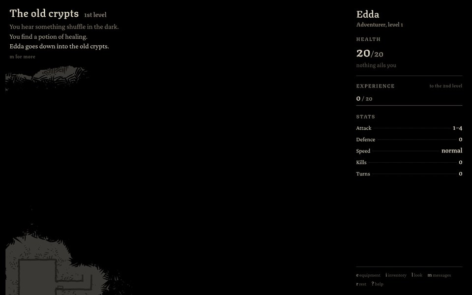<figcaption><b>Now</b><span>The room is under the corner</span></figcaption></figure>
      <figure class="pick">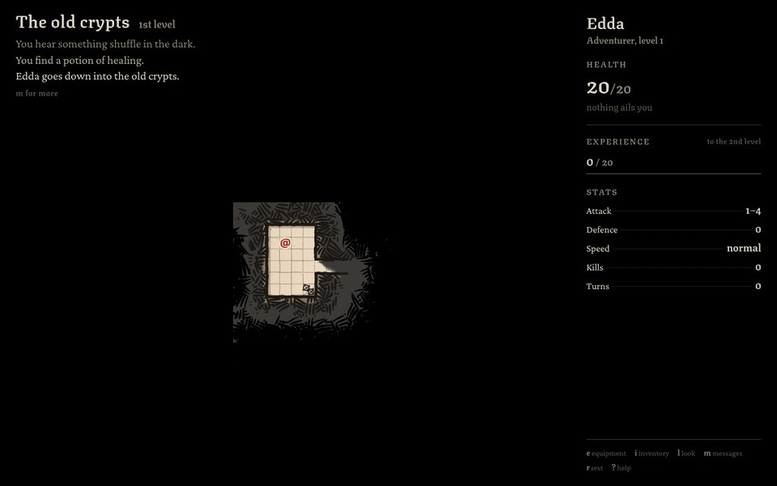<figcaption><b>A</b><span>Keep you in the middle</span><span class="tag">The camera goes past the map's edge, so you are always in the middle, clear of the corner and the sidebar.</span></figcaption></figure>
      <figure>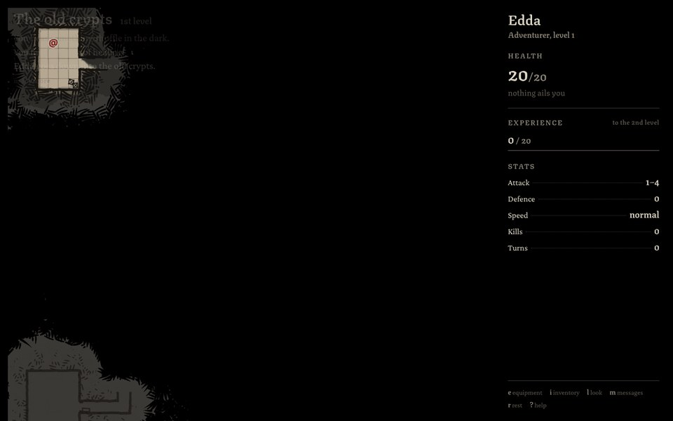<figcaption><b>B</b><span>See-through corner</span><span class="tag">The corner fades while what you see is under it.</span></figcaption></figure>
      <figure>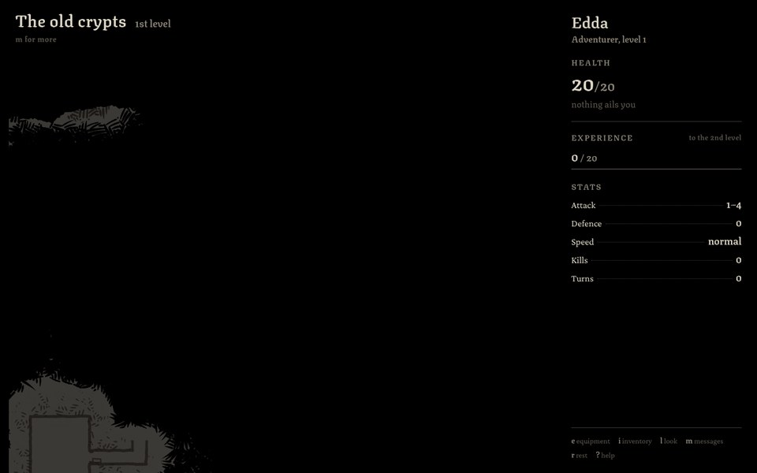<figcaption><b>C</b><span>Smaller corner</span><span class="tag">Only the place's name until something new is said.</span></figcaption></figure>
    </div>
    <p class="rec"><b>I'd pick A.</b> Nothing you're looking at can ever be under the corner or the sidebar, whatever the window's size, and the corner stays as it is. B puts writing over the map, and C still hides a room tucked under the place's name.</p>
  </section>
</main>
